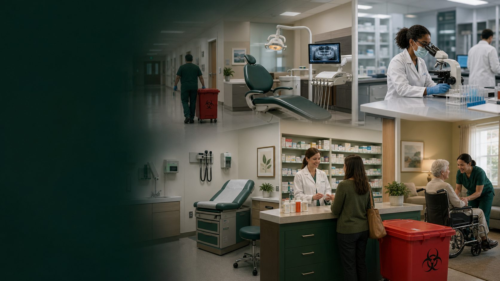

Industries
Healthcare Waste Industries Served
Regulated waste programs for clinical, academic, laboratory, dental, pharmacy, and long-term care environments.
Facility types
Different settings need different pickup logic.
The redesigned site keeps industry needs easy to scan so visitors can quickly see that their facility type is supported.
HospitalsDental PracticesLabsClinicsPharmaciesUniversitiesLong-Term CareVeterinary